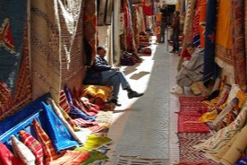
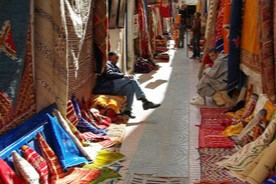
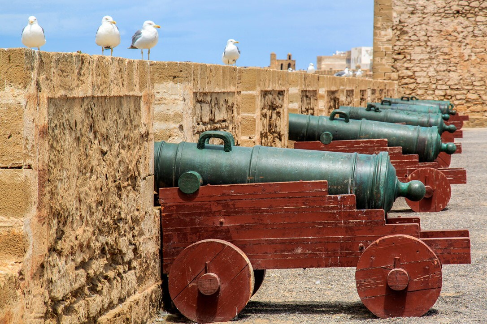
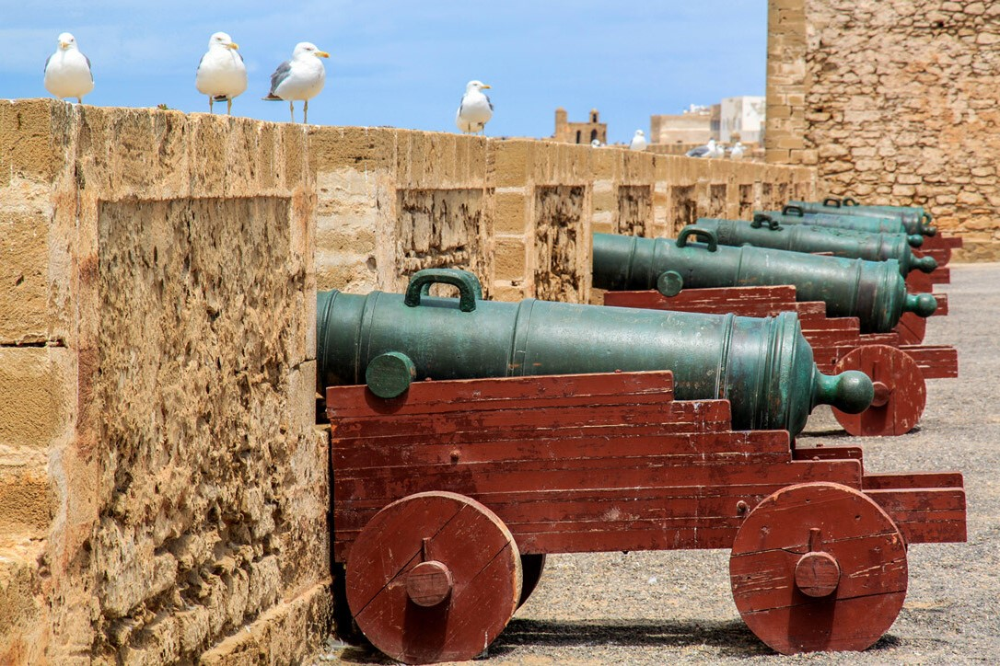
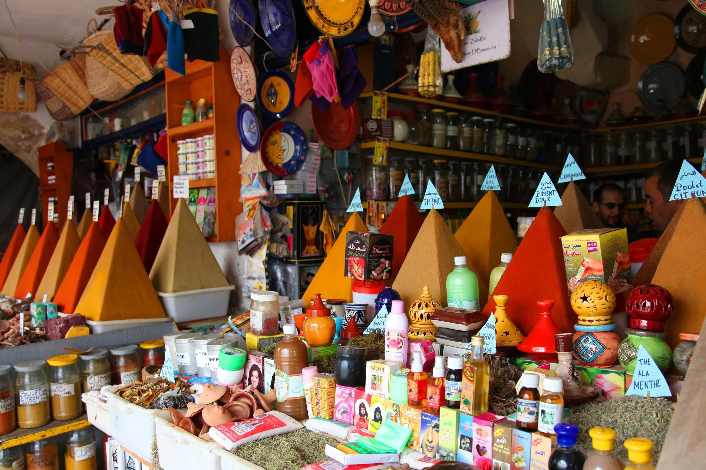
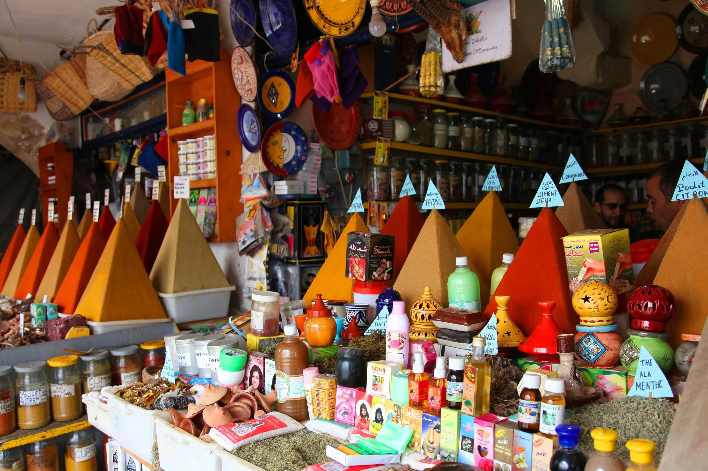

A glipmse into Essaouira's history
Essaouira, a UNESCO World Heritage site; originally known as Mogador,
boasts a rich history dating back to ancient times, with Phoenician and
Roman influences evident in its early trade routes.
The Portuguese fortified the town in the 16th century, building the
"Castelo Real.And In the 18th century, Sultan Mohammed III transformed
Essaouira into a bustling port, inviting diverse communities, including
Jews, to settle and thrive and also to promote trade with Europe and
America. This cultural melting pot contributed to the city’s unique
architecture and vibrant artisan scene.
Throughout the 18th and 19th centuries, Essaouira became a key trade hub
for goods like argan oil and textiles.
In the late 20th century, it attracted artists and musicians,
solidifying its status as a creative center with events like the Gnaoua
and World Music Festival.
Today, Essaouira is renowned for its picturesque medina, stunning
beaches, and lively arts scene, attracting visitors with its charming
atmosphere, historic ramparts, and vibrant markets.
The city's blend of history, culture, and coastal beauty makes it a
captivating destination for travelers seeking a unique Moroccan
experience.
| Medina | Skala de la Ville |
|---|---|
|
A UNESCO World Heritage site, featuring narrow streets,
whitewashed buildings, and vibrant markets. |
A historic fortress with stunning ocean views and old cannons,
offering a glimpse into the city’s past. |
 

|
 

|
{kind=link}
{kind=link}
| Essaouira Beach | Mogador Island |
|---|---|
| A popular spot for windsurfing and kitesurfing, as well as relaxing by the shore. | A small island accessible by boat, known for its natural beauty and birdwatching opportunities. |


|


|
| Souks |
|---|
| Bustling markets where visitors can find local crafts, jewelry, and spices. |
 

|
{kind=link}